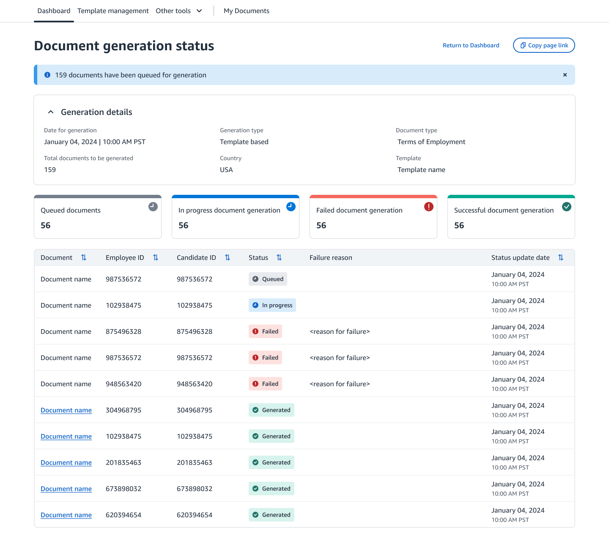
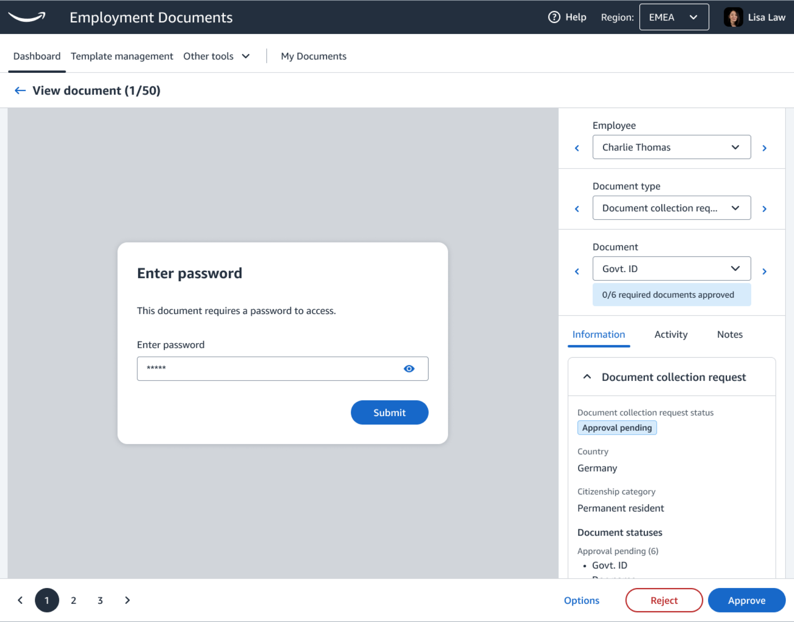
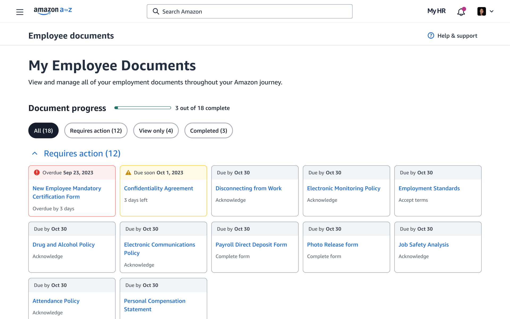

I was the lead designer for Amazon’s Employee Document Management (EDM) tool which supports 4.8 billion
documents and counting for employees in 67 countries. It is a critical system for managing documents
across their vast potential and current workforce including candidates, employees, alumni, students, and
more. Furthermore, EDM replaced an older software service with an accessible web application, saving
Amazon well over $7 million annually in contracts and extensions.
Tilted Image Slideshow


Tap to change image
The High Concept
Where it begins
Employee Document Management empowers a wide range of users including candidates, employees, alumni,
and students, to efficiently and securely manage, generate, and execute their documents on any device
throughout their time with Amazon and after as well. Furthermore, on the administrative side, HR can
leverage EDM for comprehensive document lifecycle management, including compliance, distribution, legal
support, and country specific template management. EDM simplifies document sharing across all stages of
the employment journey, fostering a more efficient, easy to use, and delightful document experience for
enterprise and user solutions.
Amazon relied on a third party contractor for document management which lead to fragmented and
error-prone products resulting in frustrating experience for both Admins and employees. The impacts were
spread across multiple systems and databases causing errors at all points of the employment life cycle.
Our team set out to launching in-house first party document solution that would be fully integrated into
the end-to-end lifecycle for employment documents.
Document management is not just about documents, but also about the people who use them and the context in which they operate. This concept was a key driver behind the creation of Amazon's initial first-party solution for document management, designed for both users and administrators.
Everyone applying for an opportunity deserves an accessible, trustworthy, and top-quality experience. This approach allows Amazon not only to evaluate but also to scale its services, ensuring that a world-class experience remains so.
My Role
Scope and responsibility
My role for this product was multi-faceted and spanned all child products and experiences, encompassing
various aspects of UX design, research, project management, and supervising UX deliverables for the
project, making sure they met both deadlines and quality standards. I advocated assertive but
collaborative UX integration, aligning with both user needs and business objectives in addition to
acting as a liaison among UX, engineering, product management, and other stakeholders and vendors.
Collaborating with researchers and defining research strategies to get the most out of a limited system
was critical as we had to be as efficient as possible. In addition, as part of project planning, I
ensured the seamless integration of UX activities with the overall development and progressive launch
schedule over multiple countries. They also proactively identified potential UX obstacles and devised
strategies to counteract them.
My scope spanned not only the parent product of Employee Document Management, but also each child
product and service, such as Document Generation, the entire employee experience, bulk admin actions the
general administrative experience.
My Scope and Impacts
Work I was directly responsible for
User Portal
Designing the Document Portal experience for a product that I used myself was a really fun and exciting experience. It was something that I could go to 100% of the people I worked with, and whether I knew them or not, we could have a conversation about the experience. This lead to many really interesting explorations into the document experience as a whole for humans in general. Getting to know and understand how facility employees work is always something I enjoy doing, so I made sure to reach out and visit with various hourly employees as well in order to understand their unique challenges.
One of obstacles I came across while designign the experience was the lack of information that coudl be presented often for security reasons. No preview images of documents, no personal information and a general lack of content made creating engaging but also meaningful elements for representing documents fairly challening. I leaned on a new date requirement system that I cover in another part of this case study.. Technically only two specific documents needed to be signed to legally work, but we can't tell people that information.
Something I found extremely interesting was the required date dynamic. Once a document had passed the "required" date, users generally diregarded them. We had one person request us to remove the documents as they were bothering them!
For this reason, we removed the literal date, since the farther a person was from the date, the less important the document became, and just had a general overdue label.
Administrative Portal
Our research, coupled with numerous discussions with the internal team and users, underscored the pivotal relationship between individuals and documents, highlighting the need for a more efficient search functionality. The limitations of the existing software necessitated the incorporation of various filters and attributes. The challenge lay not merely in enhancing current functionalities, but in innovatively transforming the product based on these insights. This involved identifying new friction points and ensuring the intuitive learnability of features.
Throughout the project, one theme consistently emerged: the interplay between individuals and documents. The existing software allowed admins to search solely by exact person IDs or documents, which was not entirely practical.
Our research focused on this theme, leading to some fascinating discoveries. We found that different attributes and filters are vital for both individuals and documents. Moreover, we understood that a document does not exist in isolation from a person, thus emphasizing the human element of document management.
The real challenge was not just in improving existing features, but in innovatively transforming the product based on our research findings. This required us to understand new friction points and ensure that the features were intuitive to learn
Bulk Document Generation
A recurring theme in document management at Amazon is the company’s immense hiring volume and workforce, which ranks among the largest globally. The influx of applicants spans not only facilities and corporate offices but also various services. The number of students, support programs, and company mergers further amplify the potential pool of individuals, making it exponentially larger than most other organizations. This vast scale underscores the importance of developing a new bulk upload solution for global document generation.
However, the challenge lies in the unique attributes and requirements of each country, dictated by local governing bodies. Additionally, files must be stored on a locally hosted server or a trusted proxy within a specific country. This requirement underscores the technical complexities and significance of digital file storage locations.
To navigate these diverse rules and attributes, we devised a logic gating system. This system facilitates automated workflows tailored to the context of the individual. Once the initial setup is complete, the system operates autonomously. Human intervention is only required for adjustments or additions
Mergers and Acquisitions
The Mergers and Acquisitions team at Amazon is a specialized group responsible for managing individuals who have become or will become Amazon employees through mergers or acquisitions. The administrative needs of this team differ slightly, focusing more on reporting and ensuring all personnel are accounted for.
This tool proves invaluable when an issue arises or an employee hasn’t progressed as expected. It allows administrators to access the individual’s history and details, enabling them to provide better support. They can then reach out directly and offer assistance tailored to the individual’s needs
I collaborated closely with the M&A team, incorporating some of their product elements into the broader Employee Development Management (EDM) system. This approach allowed us to leverage M&A, a smaller product, as a launching pad for certain interactions and design elements.
Document Collection Requests
Document Collection Requests (DCRs) may seem straightforward, but the details reveal a different story. A DCR is a request by Amazon for a party to supply at least one document, typically an upload.
One of the more complex challenges was treating the DCR as a type of document while also including the uploaded documents within it as searchable unique documents, yet still representing them as part of a larger document. While legally supported, creating an interface that people understand proved to be more difficult. Context was crucial. Depending on what the user was searching for, they might be served the entire DCR or one of the documents within it. Regardless of their choice, they could always navigate through the DCR itself, enabling faster access to potentially relevant documents.
There were some special use cases worldwide that required physical execution of documents in addition to Work Councils, particularly in Germany. These special cases had to be considered individually and led to a large number of spreadsheet and tertiary artifacts. Design files had to take into account special considerations where minor changes in content were legally significant, so each country had to have its own set of components, even if 99% of it was duplicative
Bulk Employee Data Changes
Considering Amazon’s vast annual hiring, along with its existing workforce, students, and alumni, it’s clear that the volume of document-related tasks is significant. The intricacy of setting up a bulk feature is directly related to the complexity of the task at hand.
The process starts with an internal task management tool, akin to Jira. However, the challenge arises from the need for this tool to serve the entire organization, which inevitably results in some functionality gaps. The ‘tickets’ are designed to manage the personal information of a single individual, unless additional details are provided in a different format.
When a second person is added, the admin must scan two different areas and manually gather the data to complete the tasks. This might not seem overwhelming until there are over 100 people listed, and the information is presented in free text rather than a structured table format.
To better understand the process, we collaborated with users and even assumed the role of admins ourselves. I meticulously documented the entire journey, capturing videos and images of every screen that someone would need to navigate, with a particular focus on the amount of context/screen switching.
After our revisions, we streamlined the process from seven steps and five tools to just three steps and two tools."
Upload contextual documents
Before the changes were implemented, the only place to upload files was through a specific tool. This required users to initiate a new search to find the individual or group they were looking for, and then select the appropriate document. However, with the new changes, users can now choose to upload files within the context of specific individuals or groups. This takes into account the page being viewed and the available options, creating an upload process that is both more streamlined and personalized to the intended action.
This improvement not only saves valuable time, but it also significantly reduces the need for context switching. As a result, more tasks are being completed per shift. We discovered that this increase in productivity was due to a reduction in the attrition rate per task. By decreasing the cognitive load per task, we’ve enabled more tasks to be completed.
Document Collection
Prior to the changes, candidates and employees around the world faced challenges when uploading documents due to insufficient information about their local governing body and its requirements. While links were available, there was a significant lack of contextual information. To address this, I reached out to the teams representing each relevant country to gather their specific requirements and language nuances. The precise language was crucial, given that these were all legal documents where technicalities matter.
The result was a user-centric experience that displayed the appropriate information based on the user’s selection. Additionally, we implemented a substantial UI update, incorporating our new design system and aesthetic.
Document viewing experience
Much of the document viewing experience is centered around accessibility issues, but the changes we implemented were beneficial to everyone. Design is typically an aesthetic layer applied to enhance visual appeal and user experience. However, when it comes to signing legal documents, we noticed that any changes that subconsciously suggest a departure from Amazon’s identity can lead to a loss of trust. This applies to both design and functionality. As a world-class company, Amazon is expected to lead in providing exceptional experiences, especially in areas common to all companies.
Not only did feedback and questions indicate less issues with trust and system safety, but application abondonment dropped as well which was something we didn't expect to see.
Some additional difference makers:
Accessibility
During our interviews it became apparent within a session or two that most users who had disabilities would circumvent the website experience and download the documents directly to their computers so they could use their assistive tools since the default document viewing experience on Amazon wasn't screen readable.Jump to details
Employee vs. Document Search
I advocated and helped change the default search to employee based ratehr then document, resulting in faster workflows and automation saving time and significant operational time per person. Jump to details
Document completion dates
In an effort to increase document completion rates, and also present a more welcoming adn informative document experience.Jump to details
Getting to know the team
Who am I working with and how can I add value?
I didn’t want to just solve problems, I aimed to understand the most effective way to articulate why my
solution addresses those issues compellingly, fostering agreement and gaining support to move forward. A
countless number of people are involved in the designs process depending on the stage, scope, timing,
and a number of other factors and it was up to me to make sure we could be as effective as possible no
matter the audience or setting.
After meeting the team and anyone handing off work to me I set off to talk with the prior design and
research team to get a hold of any research and information. I would end up bothering them for a very
long time slowly gathering pieces and parts while putting together my own investigation in ways of
gathering and making sense for not only myself, but for the rest of the team as well. My findings were
going to be there's as well.
Some of the work I inherited were Heuristic evaluations, usability test, SUS scores, and every known
persona and journey form pre-hire to alumni. All of these research meant I could focus my time on
studying and benchmarking instead of doing the initial evaluations. We could evaluate performance of
changes right away.
What did we already have?
Pre-Discovery
To grasp the scope of existing work, research, and knowledge, I started a comprehensive review process
of evaluating what information we already had so I could understand the current situation better than
anyone as the goal. The first few months were occupied with intensive interviews with the previous team,
extensive examination of existing documentation, and frequent sync-ups with project managers to gather
all pertinent information.
Interestingly, much of this invaluable work had not been previously shared with this specific team. It
was a great opportunity for everyone to get a fresh and more critical look at the work they’ve been
doing. It was there, just not socialized to a very relevant group of people. This not only saved
research time, but also created an environment where we were all on the same page and learning together.
Everyone understood together and there was much less “but I thought” conversation happening.
Some of the key tasks broken down by product/feature. Various journeys representing the current and future states.
By leveraging available information, we were able to expedite a three-year plan and prioritize tasks
more effectively. The early integration of design provided a platform for all teams to collaborate
efficiently. Prior to this, the process was fragmented and lacked an effective way to consolidate,
align, and advance together. Now, with a centralized repository for our designs, we could hold ideas and
facilitate asynchronous conversations more effectively.
Transforming this analysis into a roadmap allowed each team to provide precise estimates, taking into
account all contextual factors, leading to a significant decrease in planning uncertainties. By
delivering UX work ahead of development, we could accommodate inevitable adjustments and effectively
manage multiple concurrent work streams.
It always comes down to a person.
Documents don't exist without people
Discovery
Document management is about documents, sure, but those documents don't have a pupose to exist
without people. The people working and the people governing the countries they work within. It's
people all the way down.
The initial discussions grounded in research, along with various organizational prioritization
meetings, ensured that UX held a substantial role in the decision-making process. This beneficial
context allowed me to work independently, without the need to divide my responsibilities to many
times.
With everyone on the team now sharing a unified understanding, I was able to facilitate workshops to
gather sufficient information for informed decision-making. Collaboratively, we developed both current
and future user journeys as well as story maps. This was achieved by merging our internal
understanding and user knowledge, which together painted a comprehensive picture of both the perceived
and backend user experiences
During these sessions, we focused on creating a comprehensive view of the employee document
experience, including tab and context switching. Most services were distributed across various tools
depending on the needs of the HR representative.
What was the current experience like?
Biggest points of frustration and issue?
What were needs not being met?
Which jobs to be done needed to be accounted for weren’t being addressed?
Once we had a universal understanding of the experience we were ready to define and plan.
While developing the user journeys, we recorded screenshots, notes, journey paths, and time spent on
each relevant task. This allowed us to establish benchmarks for measuring the impact of changes. It
also highlighted the various factors and the scope influenced by these roles, leading us to discover
new teams for collaboration and communication.
Automating document storage workflows
One of the really interesting things I realized while working on this projects is the fact that while
the concept of a digital files is simple enough, where it's stored is an extremely important
requirement. It's one of those things that make you realize how concepts like where a file is stored
is often taken for granted. As we started to dig into requirements it was very clear that we had to
establish some type of logic based system where rules are applied leveraging attributes and system
information in ordert to automate many of these tasks. Converting thousands of manually created rules
that determined which employee received which documents was a monster of a task that revealed just how
different each country can be. For example, Germany has a Work Councils, that by concept offer better
treatment for employees, but that also require wet (physical) signatures in a digital age.
An Amazon worthy experience
Define
To grasp the scope of existing work, research, and knowledge, I started a comprehensive review
process of evaluating what information we already had so I could understand the current situation
better than anyone as the goal. The first few months were occupied with intensive interviews with the
previous team, extensive examination of existing documentation, and frequent sync-ups with project
managers to gather all pertinent information.
Interestingly, much of this invaluable work had not been previously shared with this specific team.
It was a great opportunity for everyone to get a fresh and more critical look at the work they’ve been
doing. It was there, just not socialized to a very relevant group of people. This not only saved
research time, but also created an environment where we were all on the same page and learning
together. Everyone understood together and there was much less “but I thought” conversation happening.
By leveraging available information, we were able to expedite a three-year plan and prioritize tasks
more effectively. The early integration of design provided a platform for all teams to collaborate
efficiently. Prior to this, the process was fragmented and lacked an effective way to consolidate,
align, and advance together. Now, with a centralized repository for our designs, we could hold ideas
and facilitate asynchronous conversations more effectively.
Transforming this analysis into a roadmap allowed each team to provide precise estimates, taking into
account all contextual factors, leading to a significant decrease in planning uncertainties. By
delivering UX work ahead of development, we could accommodate inevitable adjustments and effectively
manage multiple concurrent work streams.
Getting to production
Develop
The development phase of our project held significant value and importance. Primarily, it was an
instrumental period that provided an opportunity to enhance the operational procedures for the new
team. It served as a pivotal point where all efforts, strategies, and plans culminated into an
actionable process. During this phase, every team member was actively involved, contributing their
specific skills and expertise, and working collaboratively to ensure the success of the project.
Furthermore, this was the phase where we could establish open communication and dialogue with our
users. It was during this time that we could put our product to the test, identify areas of
improvement, and incorporate user feedback into our development process. This interactive process did
not only result in a significant improvement in the quality of our product, but it also facilitated
the development of lasting relationships with our administrative users users.
These relationships have proven invaluable, as the individuals we connected with during the
development phase continue to provide us with insightful and constructive feedback from their
respective teams. Their continued involvement and willingness to share their experiences with our
product have greatly contributed to the quality of the product being delivered.
Progressive global launching
Deliver
After establishing a comprehensive plan, we took advantage of these progressive launches, treating each as an opportunity to conduct User Acceptance Tests (UATs). Executing UATs in small, real-world groups allowed us to gather valuable feedback and insights into the usability and functionality of the tool. This strategic approach was designed to ensure that the vast majority of the users, who represented the primary populations, received a thoroughly vetted and tested user experience.
Following the initial launch, we would conduct a rigorous round of bug fixing. This consisted of internal bug bashing sessions (a HUGE thank you to the development team if they ever see this) in addition to feedback sessions in the various geographic regions as the groups of countries were launched. Any remaining issues, whether minor or significant, were promptly addressed. If the problems couldn't be resolved immediately, they were scheduled as a fast-follow task or added to our backlog for future attention. This method ensured that we were constantly refining and improving the user experience, even after the product was live.
An important aspect to consider was that our launches were always phased due to various country-specific limitations. These limitations often resulted in multiple mini-product launches. While this method fragmented the launch process, it was necessary to accommodate the differing requirements and regulations of each country.
This phased approach had a dual impact. On one hand, it simplified each individual launch by reducing the scope and scale of each phase. On the other hand, it could occasionally elevate cognitive and operational strain. The process of coordinating and managing multiple mini-launches could be challenging and required careful planning and organization.
Despite the challenges, this approach proved beneficial. It allowed us to adapt and respond to user feedback in real-time and ensured that each user group received a thoroughly tested and refined user experience. It also allowed us to continually refine and improve our product, ensuring that we delivered the highest quality tool to our users.
I appreciate the effort you put into something that is often taken for granted... Especially for employees who need accessible administrative and internal tools.
The Main Launch
The Launch

Document management is not just about documents, but also about the people who use them and the context in which they operate. This concept was a key driver behind the creation of Amazon's initial first-party solution for document management, designed for both users and administrators.
Everyone applying for an opportunity deserves an accessible, trustworthy, and top-quality experience. This approach allows Amazon not only to evaluate but also to scale its services, ensuring that a world-class experience remains so.
The initial discussions grounded in research, along with various organizational prioritization
meetings, ensured that UX held a substantial role in the decision-making process. This beneficial
context allowed me to work independently, without the need to divide my responsibilities to many
times.
Overcoming Obstacles
Key Challenges
Challenges breathe life into a project, and create the interesting narratives and stories you end up telling about those projects. Whether on interviews or perhaps onstage at some point. The presence of humans inherently introduces complexities, making it virtually impossible for a project to be devoid of challenges. Here, I recount some of the most significant, intriguing, and arduous obstacles I faced during the course of this project.
Changing from a document seasrch to a person search
Employee Search
The research conducted in addition to a number of normal conversations with internal team and users highlighted the crucial relationship between people and documents, underscoring the need for more efficient search functionality. The existing software's limitations necessitated the introduction of different filters and attributes. The challenge was to innovate and change the product based on these insights rather than merely improving current functionalities, which involved understanding new friction points and ensuring intuitive feature learnability.
Throughout the project, I noticed a recurring theme: the relationship between people and documents. The existing software permitted admins to search only by exact person IDs or documents, which was not entirely logical.
In our research, we emphasized this theme and made some intriguing discoveries. We found that different attributes and filters are crucial for people and documents. Furthermore, we realized that a document does not exist without a person, reinforcing the human aspect of document management.
The real challenge was not simply improving existing features, but innovatively changing the product based on our research. This required understanding new friction points and ensuring that the feature was intuitive to learn.
Cost savings strategies
Cost Savings and Frugality
The research conducted in addition to a number of normal conversations with internal team and users highlighted the crucial relationship between people and documents, underscoring the need for more efficient search functionality. The existing software's limitations necessitated the introduction of different filters and attributes. The challenge was to innovate and change the product based on these insights rather than merely improving current functionalities, which involved understanding new friction points and ensuring intuitive feature learnability.
Throughout the project, I noticed a recurring theme: the relationship between people and documents. The existing software permitted admins to search only by exact person IDs or documents, which was not entirely logical.
In our research, we emphasized this theme and made some intriguing discoveries. We found that different attributes and filters are crucial for people and documents. Furthermore, we realized that a document does not exist without a person, reinforcing the human aspect of document management.
The real challenge was not simply improving existing features, but innovatively changing the product based on our research. This required understanding new friction points and ensuring that the feature was intuitive to learn.
Document management language and vocabulary
Documents, Files, Hierarchy
Differing interpretations of documents and files led to language challenges in Employee Document Management (EDM). Standardizing language and accounting for exceptions to rules or standards was crucial for scalability. For example, document collection requests, categorized as documents, also make requests and contain other documents, all of which could appear individually in a search.
Initially, differing mental models of what constitutes documents and files led to language challenges, particularly among administrators and users. This confusion extended beyond internal discussions.
Debates also emerged about the differences between documents and files, and how files within documents were perceived as items on a computer during upload processes. Establishing a standardized language and vocabulary was critical.
We had to account for specific cases that deviated from rules or standards, ensuring we could scale effectively in unexpected ways. For instance, consider document collection requests. These items are classified as documents, but they are a type of document that also makes requests and contains other documents. Keep in mind, during a search, all of these documents could appear individually in a document search due to the structure we modeled based on our best insights
Document Completion Dates
Depending on how you position it, dates can either help or hinder your experience
We encountered a challenge due to the lack of a system enforcing document completion. Documents originated from various teams across multiple countries, resulting in no standardized completion or signing mechanism. This reliance on manual follow-up led to a significantly higher number of incomplete documents than the legal team deemed acceptable.
I started my work by working with the team to identify number of employees with incomplete documents and interviewed them. While doing this a encountered one user who really put all the pieces together for me. They stated:
Can you remove the overdue documents? They're distracting."
Traditionally, document management systems faced a critical user behavior hurdle: low engagement. People primarily accessed the system to find documents they'd already completed, lacking motivation to proactively update or submit new information. This resonated with me – it highlighted the missing piece to understanding user behavior. There was simply no inherent urgency for them. Without someone actively reminding them, many wouldn't prioritize completing documents.
The Root Cause: Lack of Perceived Value.
One key factor contributing to this apathy was the users' unclear understanding of the purpose behind document completion. Unless information was explicitly required, they didn't see the value in providing it.
Impacts in Detail
Additional information about the difference I made
Challenges are what put life into a project and what make good stories and it's not possible to have a project without challegnes because humans are involved. These are some of the most impactful, interesting, and/or diffcult challenges I encountered while working ont his project.
Changing from a document seasrch to a person search
Accessibility
As previously mentioned, during our interviews, it quickly became apparent that most users with disabilities would bypass the website experience and download documents directly to their computers. This allowed them to use their assistive tools, as the default document viewing experience on Amazon wasn’t screen-readable. This unique situation put a spin on testing, as it’s rare that users completely circumvent the product we’re supposed to be testing.
This made the sessions both interesting and challenging, as these individuals had to painstakingly navigate a process that wasn’t designed with anyone outside of a fully able-bodied person in mind. As we navigated the UI together, we encountered several poor and downright experience-blocking issues that made it nearly impossible to do anything beyond the required functions. Reading, understanding, and navigating weren’t options unless the documents were downloaded.
While this was disheartening, it was also motivating. Here was an opportunity to truly influence positive change and directly improve people’s lives.
The first step was to create a better reading experience for everyone, not just individuals with disabilities. This involved working with developers and reviewing different libraries and solutions to determine which best fit our needs. We ended up using the Mozilla PDF reader, which is fully accessible and offered everything we needed with minimal operational impact. We did encounter some challenges where documents that required signatures couldn’t leverage this new tool, so we had to create a solution for that later, which also involved financial and legal teams.
After creating and testing the new PDF reader, I revisited our participants from our last session and introduced a few new people as well. The feedback was overwhelmingly positive, and the impact on people’s lives was palpable. The way they spoke was heartwarming. Adults were genuinely happy that people had considered them. The Accommodation team reached out to me personally, and we had a lovely conversation about the type of work this represented and how it affected people differently than a typical product improvement.
How to change a long term mental model of operations within an organization
Employee vs. Document Search
For the longest time, the whole dynamic of document management was based around documents. Finding documents, editing them, organizing and storing them. The software being used was buiklt around documents and everyone was used to it. What I noticed was that even though the documents were what had to be completed, we were missing WHY those documents had to be managed: for people. So I went and created some designs exploring an employee based search and it revealed a number of workflows that would be improved and had just not taken this approach yet.
I proposed enabling a search that would have "modes," one for employee based searching and another for documents. That way, the user had flexibilty to complete the task if it contained bulk actions or complex contexts that might span across multiple people.